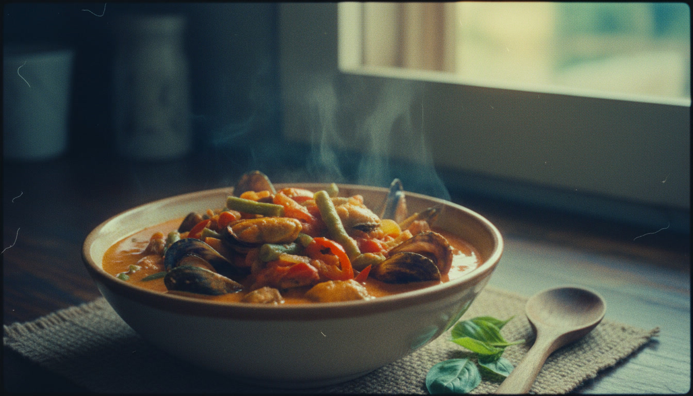

Tahong Bicol Express combines the creaminess of coconut milk, the bold heat of chili peppers, and the briny sweetness of mussels in one flavorful dish. This seafood twist on the Bicol classic is comforting, satisfying, and a great choice whether you serve it with rice or enjoy it as pulutan with friends.
I have always enjoyed the combination of coconut milk and spice, and this Tahong Bicol Express recipe is one that never fails to impress. The mussels soak up the rich, creamy sauce beautifully, creating a seafood dish that is both comforting and full of character.
Boil water in a pot and add the crushed ginger. Cook for 2 minutes to infuse the broth, then add the mussels. Boil for 1 minute, drain, and separate the meat from the shells. Set aside.
Heat cooking oil in a large pan over medium heat. Sauté garlic until light brown. Add onion and minced ginger, and continue cooking until the onion softens and becomes fragrant.
Stir in the shrimp paste and Thai chili pepper. Cook for 45 seconds to release the flavors.
Pour in the coconut milk and bring it to a gentle boil. Simmer for a few minutes until slightly thickened.
Add the mussels and simmer for 1 minute. Remove them from the sauce and continue cooking until the liquid reduces by half.
Return the mussels to the pan and add the long green pepper. Stir gently and cook for another minute. Season with ground black pepper. Serve hot with rice or as pulutan during gatherings.